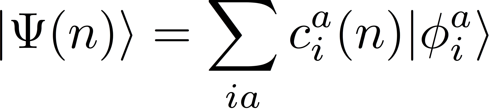
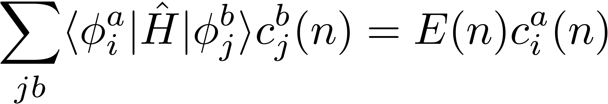
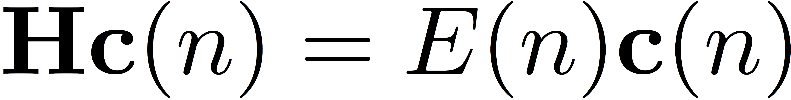
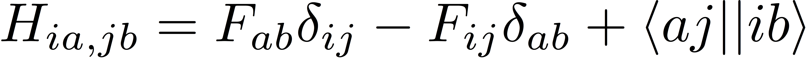
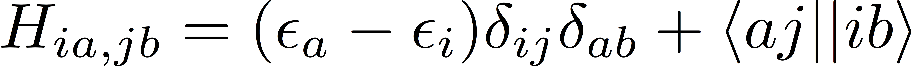
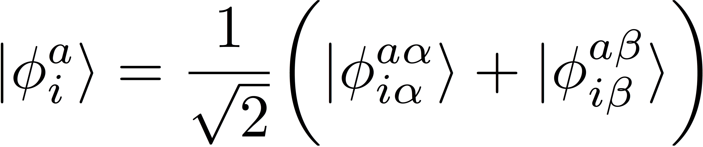
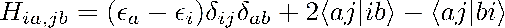
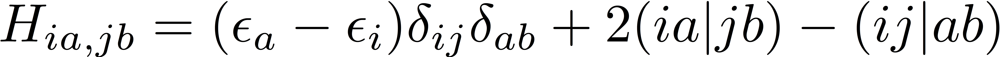
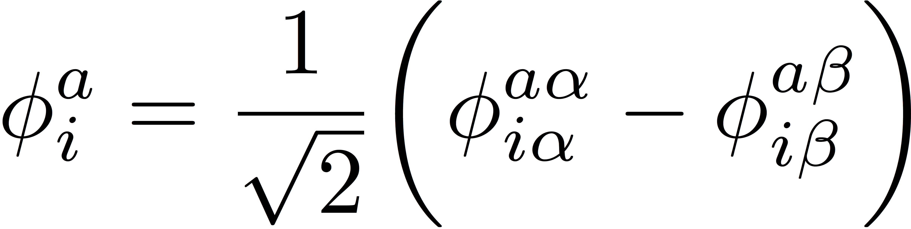
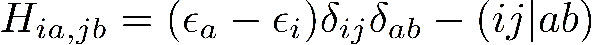

Python Projects: Configuration Interaction Singles (CIS)
Overview
In this project, you will learn how to write a restricted configuration interaction with single excitations (CIS)
code using the Python interface to the Psi4 electronic structure
package. Most of Psi4's core libraries (integral generation, SCF solver, etc.) are exposed to Python, which
facilitates the development of short, easy to understand codes for complex electronic structure methods. For
example, you will soon find that it is possible to write a working CIS code in Python in less than 100 lines!
The Python code for this tutorial can be found here.
Background:
Note: we use atomic units throughout this tutorial.
At the Hartree-Fock level of theory, the N-electron wave function
is approximated as an antisymmetrized product of N one-electron
functions called molecular orbitals (MOs) (a Slater determinant). The
simplest representation of an excited-state wave function would be a
single Slater determinant comprised of a different set of molecular
orbitals, but we can obtain a slightly better description of the
excited state by expressing it as a linear combination of Slater
determinants that differ by the ground-state configuration by
one electron. What we are describing here is a configuration
interaction with single excitations (CIS) wave function; the
CIS wave function for the nth excited
state can be expressed as

Here, the symbol φia represents a Slater
determinant that is singly excited relative to the reference determinant,
and the indices i and a represent a spin orbitals that are
occupied and unoccupied (virtual) in the reference, respectively.
The expansion coefficients and energy of the excited state can be
determined by testing the Schrödinger equation with one of the
singly-excited configurations to obtain:

We can form similar expressions for all excited states, and, taken together,
these expressions become an eigenvalue equation

where H is the matrix representation of the Hamiltonian in the basis
of singly-excited determinants. The elements of this matrix are given
by

where F represents the Fock matrix, and ⟨aj||ib⟩ represents
an antisymmetrized electron-repulsion integral in physicists' notation. Recall that the
Fock matrix for restricted Hartree-Fock theory is diagonal in the MO basis, so this expression
simplifies sligthly:

where εi and εa represent orbital energies.
It turns out that when the eigenvalues of the CIS Hamiltonian represented in this spin-orbital
basis correspond to energies for CIS states of two different spin symmetries: singlets and
triplets. If we are only interested in the singlet states, then we can spin adapt
our basis functions and represent the Hamiltonian matrix in this new spin-adapted basis.
The singlet spin-adapted basis functions are given by

and the corresponding matrix elements of the Hamiltonian are

Using chemists' notation, these matrix elements are

Note that the orbital labels i, j, a, and b no longer represent
spin orbitals; they represent spatial orbitals. The benefits of spin-adaptation here
are two-fold. First, the dimension of the Hamiltonian is reduced by a factor of two.
Second, because matrix diagonalization scales as the third power of matrix size, the
cost of the diagonalization procedure is reduced by a factor of eight!
Procedure:
Step 1. Singlet excitation energies
Working with Psi4 through Python is quite simple.
The first thing we should do is tell Python where the Psi4 libraries reside.
I installed Psi4 from source using conda (see here). Once Psi4 is in my path, I can run
run
(08:14 ~/) psi4 --psiapi
export PATH=/Users/deprince/miniconda3/envs/p4dev/bin:$PATH # python interpreter
export PATH=/Users/deprince/edeprince3/psi4/install/master/bin:$PATH # psi4 executable
export PYTHONPATH=/Users/deprince/edeprince3/psi4/install/master/lib//:$PYTHONPATH # psi4 pymodule
Once I add these lines to my ~/.bashrc file and reload my bash environment, I am
ready to interface with Psi4 through Python.
Now, open a file (e.g. cis.py) using your
favorite text editor. You should import both Psi4 and numpy libraries;
the latter contain some useful features for
linear algebra and tensory manipulation:
import psi4
import numpy as np
Next, you should create a molecule. In the usual Psi4
input file, the molecule is designated in the molecule block. From within Python, the syntax
looks only slightly different:
# set molecule
mol = psi4.geometry("""
o
h 1 1.0
h 1 1.0 2 104.5
symmetry c1
""")
The way you set options through Python is similar to how you would set
them in a Psi4 input file,
but the syntax is, again, slightly different:
psi4.set_options({'basis': 'sto-3g',
'scf_type': 'pk',
'e_convergence': 1e-8,
'd_convergence': 1e-8})
Now, we are ready to perform a Hartree-Fock computation to determine our
reference electronic configuration:
# compute the Hartree-Fock energy and wavefunction
scf_e, wfn = psi4.energy('SCF', return_wfn=True)
Note that we asked the energy routine to return a wavefunction. This object
contains all of the important information from the Hartree-Fock computation,
including the number of electrons, the number of orbitals, the AO/MO
transformation matrices, and more! We will need some of this information
for our CIS routine:
# Grab data from wavfunction
# number of doubly occupied orbitals
ndocc = wfn.nalpha()
# total number of orbitals
nmo = wfn.nmo()
# number of virtual orbitals
nvirt = nmo - ndocc
# orbital energies
eps = np.asarray(wfn.epsilon_a())
# occupied orbitals:
Co = wfn.Ca_subset("AO", "OCC")
# virtual orbitals:
Cv = wfn.Ca_subset("AO", "VIR")
Now, we can use Psi4's
MintsHelper class to generate the two-electron integrals that we
need. The CIS Hamiltonian requires two classes of integrals of the
type (ov|ov) and (oo|vv), where "o" represents an orbital that
is occupied in the reference function, and "v" represents a virtual
orbital. The MintsHelper class can construct tensors containing
these specific classes of orbitals, provided we provide to it the
corresponding definitions of the molecular orbitals (given by the
Co and Cv matrices above):
# use Psi4's MintsHelper to generate ERIs
mints = psi4.core.MintsHelper(wfn.basisset())
# build the (ov|ov) integrals:
ovov = np.asarray(mints.mo_eri(Co, Cv, Co, Cv))
# build the (oo|vv) integrals:
oovv = np.asarray(mints.mo_eri(Co, Co, Cv, Cv))
Given these tensors, you can access the element (ij|ab) in Python
as oovv[i,j,a,b]. Here, the indices i and j could
run from 0 to ndocc-1, and the indices a and b could
run from 0 to nvirt-1.
For convenience, we can also strip out the occupied and virtual
orbital energies from the full list of orbital energies that
we obtained from the wave function object above:
# strip out occupied orbital energies, eps_o spans 0..ndocc-1
eps_o = eps[:ndocc]
# strip out virtual orbital energies, eps_v spans 0..nvirt-1
eps_v = eps[ndocc:]
Now, we have all of the ingredients to build the CIS Hamiltonian!
Using the expressions above, build the matrix representation of
the Hamiltonian in the basis of spin-adapted singly-excited functions.
The dimensions of this Hamiltonian should be ndocc*nvirt by ndocc*nvirt:
Ham = np.zeros((ndocc*nvirt,ndocc*nvirt))
The composite index that represents each basis function
(φia),
can be expressed in terms of the orbitals that define that basis function.
For example, the index ia = i*nvirt + a, where i=0..ndocc-1, and a=0..nvirt-1.
Check your Hamiltonian matrix.
Once you have your Hamiltonian, you can diagonalize it using numpy's
"eigvals" function:
# diagonalize Hamiltonian
eig = np.linalg.eigvals(Ham)
Note that the eigenvalues this function returns will not be
sorted. You should write a small bit of code in Python that
sorts them from low to high. Once you have done that,
you can check your
CIS excitation energies. (Note
that these reference energies are given in eV, not Hartrees).
Step 2. Triplet excitation energies
We can also define spin-adapted basis functions for triplet spin states.
The triplet spin-adapted basis functions are given by

and the corresponding matrix elements of the Hamiltonian are

Repeat this exercise and check your triplet
CIS excitation energies, which,
again, are given in units of eV.